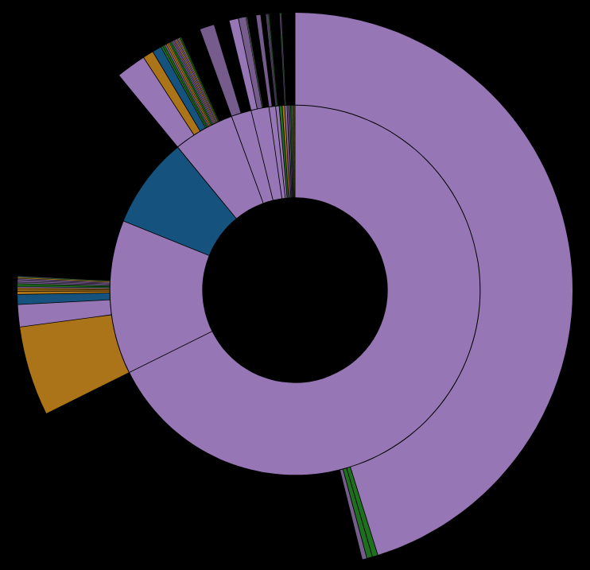
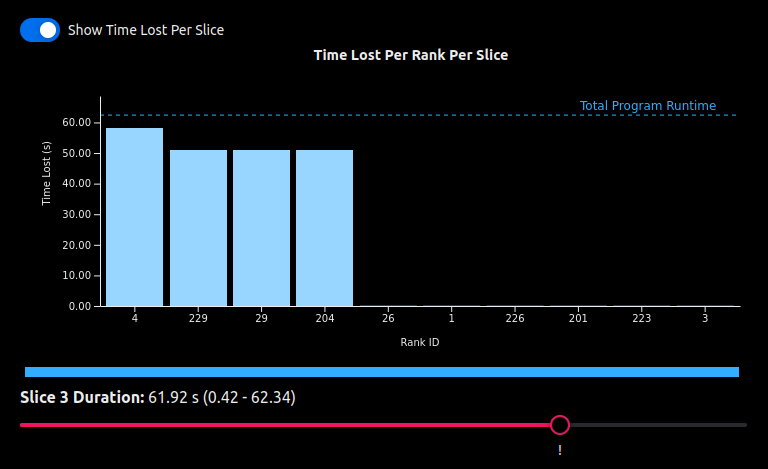
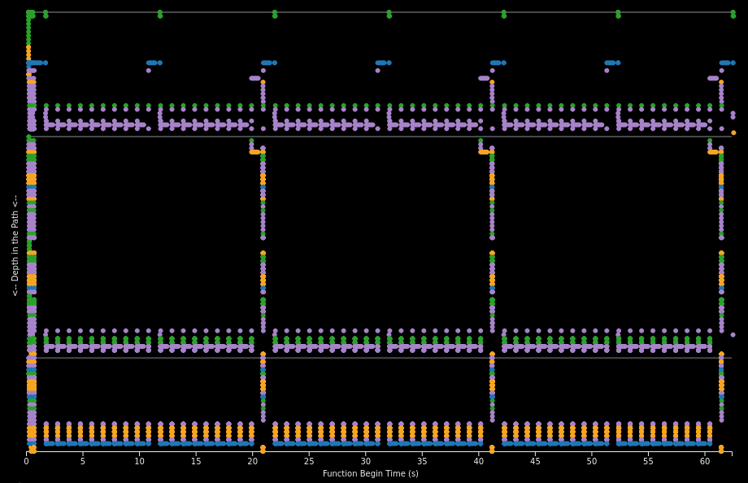

Your Application’s Execution, Visualized.
- Is your parallel program losing time?
- Are some MPI ranks waiting on others?
- Are you wasting compute resources with inefficient code?
- Are you wasting developer time searching for the problem?

Proportion Analyzer: Find which functions take the most time.

Analysis Viewer: Determine where time is lost in your program.

Events Plot: View a trace-like visualization of the app's execution.